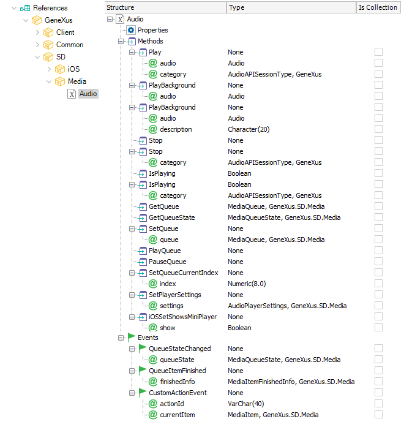

The Audio external object enables GeneXus users to enable audio features to their Smart Devices application. Examples that this API can solve: a. Play an Audio and continue even though the user closes the application. This document will explain how the (a), (b) and (c) cases are solved with GeneXus, the core functionality of the API and some examples of this feature on a Smart Devices application.
1. GeneXus Objects InvolvedThis API is composed of an External Object and a Domain. To solve a) GeneXus provides a PlayBackground method. This method will play the audio on background even though the application closes. To solve b) and c) there is one method Play, but this method receives a parameter extra of the Audio to be played. This parameter will be based on the domain AudioAPISessionType. The possible values of this domain are:
The external object is as follows:  The methods involved in play a single audio are:
The Audio parameter is based on the Audio data type.
2. ExamplesThis Event plays an Audio on background:
Event 'PlayBackground'
Audio.PlayBackground(&varAudioLong)
EndEvent
This Event will behave like the above:
Event 'PlayBackground2'
Audio.Play(&varAudio4, AudioAPISessionType.Background)
Endevent
This Event will execute the &AudioMix with any audio that is already playing:
Event 'PlayMix'
Audio.Play(&varAudio4, AudioAPISessionType.Mix)
Endevent
If there was a Background Audio already playing, the Audio will be mixed. This event will execute only the &SoloAudio stopping any audio being played:
Event 'PlaySolo'
Audio.Play(&varAudio2, AudioAPISessionType.Solo)
Endevent
If there was a Background Audio playing, it will be paused and resumed after the Solo Audio finishes. This Event Plays if no background Audio is Playing plays a Background Audio if a Background Audio is already playing it plays a Mix Audio:
Event 'isPlayingBackground'
Composite
&varBoolean = Audio.IsPlaying(AudioAPISessionType.Background)
if &varBoolean
Audio.Play(&varAudio4, AudioAPISessionType.Solo)
else
Audio.PlayBackground(&varAudioLong)
endif
EndComposite
Endevent
NotesWhen using the Background option; even if the device is in "mute state", the audio will be heard. The Mix option is generally used to reproduce a short audio; it will potentially sound on top of an existing one. If the device is "muted" it will not be heard either
Enabling background playback for iOSiOS requires additional permission to let the application play audio while it is not running. By default, when the application closes, the audio will stop even if it was started with PlayBackground() method. To enable background playing in iOS, you'll need to add the 'audio' value for the Background Modes property. |
| Backlinks |
| Audio external object |